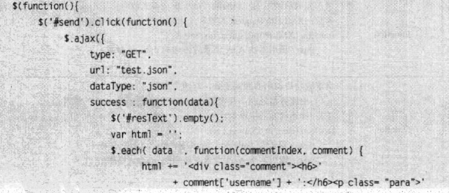

1.load加载，get加载,post请求
jsonboj为传递给后台的参数
$.get('url',jsonobj,function(data,textArea){
var username=data.username;
var content=data.content;
var txtHtml='..'//拼串;
$('resText').html(textHtml);
},"json")//最后一个参数是数据格式 $.post()其余不变,post更安全

2.表单序列化
$('form').serialize(); 序列化form表单里的值变为java用的字符串！表单里的组件最好写上name,理解为键名！
$('form').serializeArray();序列化form表单里的值变为JSON数组;表单里的组件写name,理解为键名!
$.param(obj);不太用
3.ajax loading
3.1全局loading; (调用ajax就会出现的loading)
$('#loading').ajaxStart(function(){
$(this).show();});
$('#loading').ajaxEnd(function(){$(this).hide();})
3.2单个loading;
$.ajax({...});async:记得设置true;设置loadingif 的出现与关闭即可！
w3c:$("button").click(function(){
x=$("form").serializeArray();
$.each(x, function(i, field){
$("#results").append(field.name + ":" + field.value + " ");
});
});